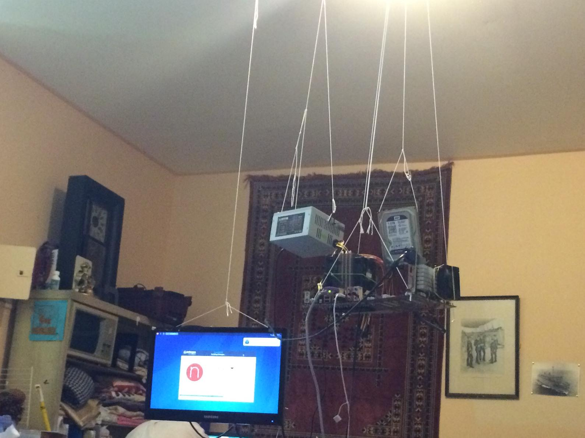
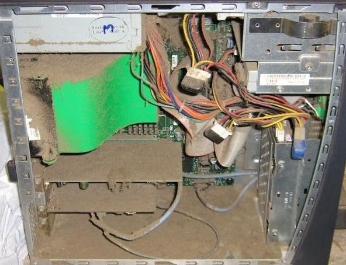
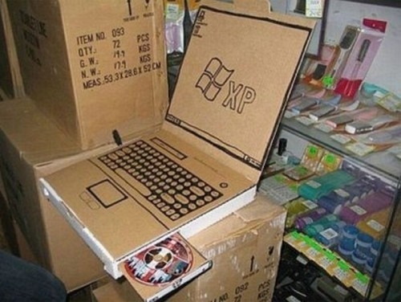

Best budget gaming setups under $6,000
This gaming setup uses strings to offer a more cost effective form of a standing desk. It has average specs and will be able to run modern titles like valorant at a groundbreaking 2 frames per seconds. www.dontbuycomputersfromus.com



This gaming setup doubles as a personal oven for your room. Assuming that it will even power on. Airflow is practically non existant in this case and causes very high thermals. You can play league of legends and cook your pizza bites at the same time. www.dontbuycomputersfromus.com
This gaming PC is completly made out of cardboard. It is very inexpenive and only requires a little bit of skill and some glue to build. While it cannot actually run videogames it allows you to use your imagination much more than a normal computer. You can play any game you want on this. All you have to do is visualize yourself playing. www.dontbuycomputersfromus.com